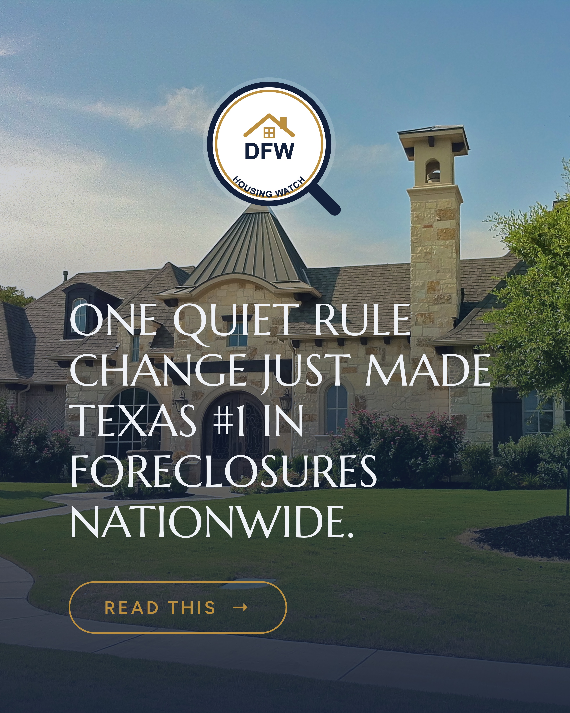
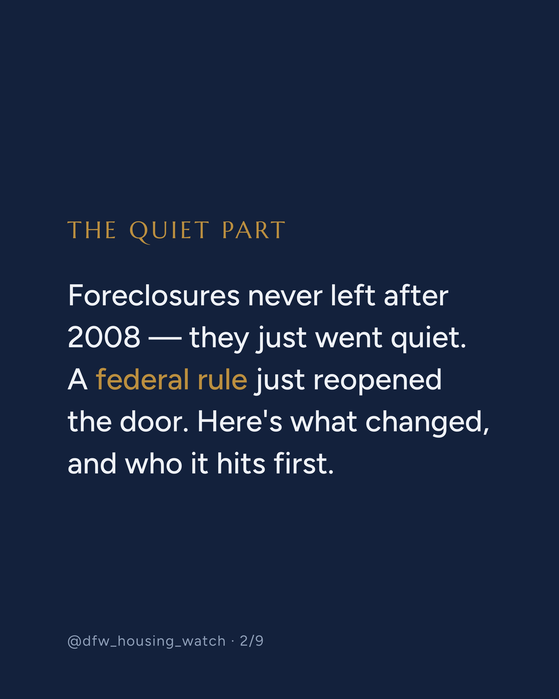
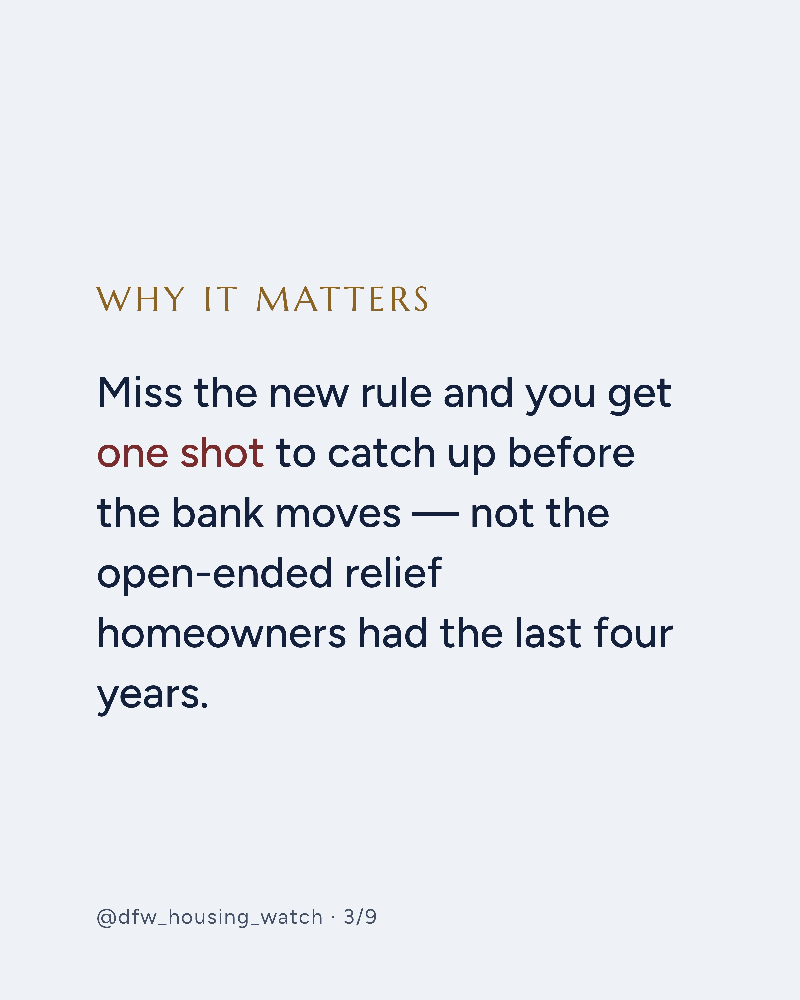
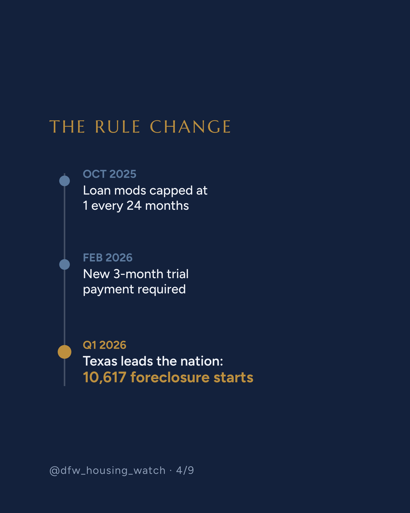
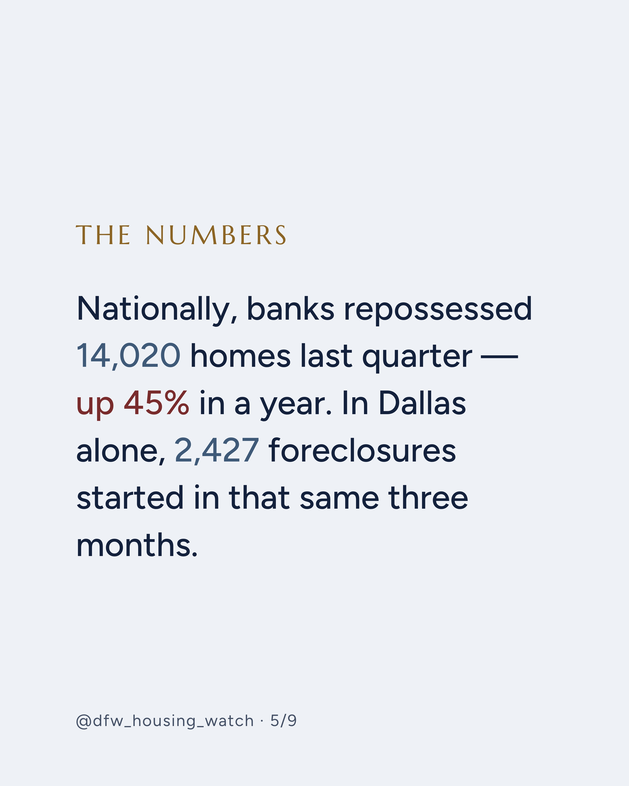
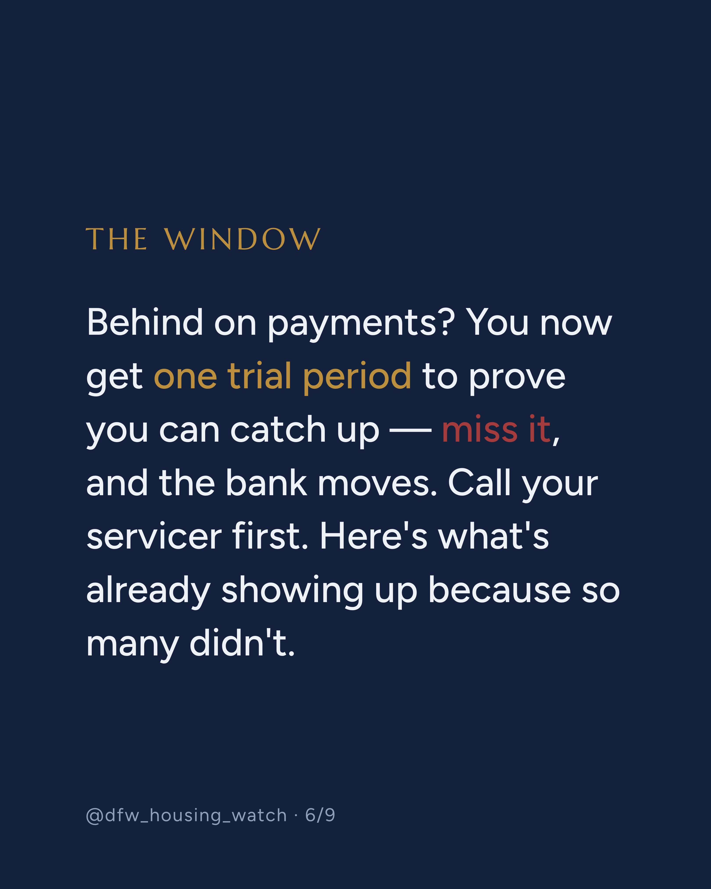
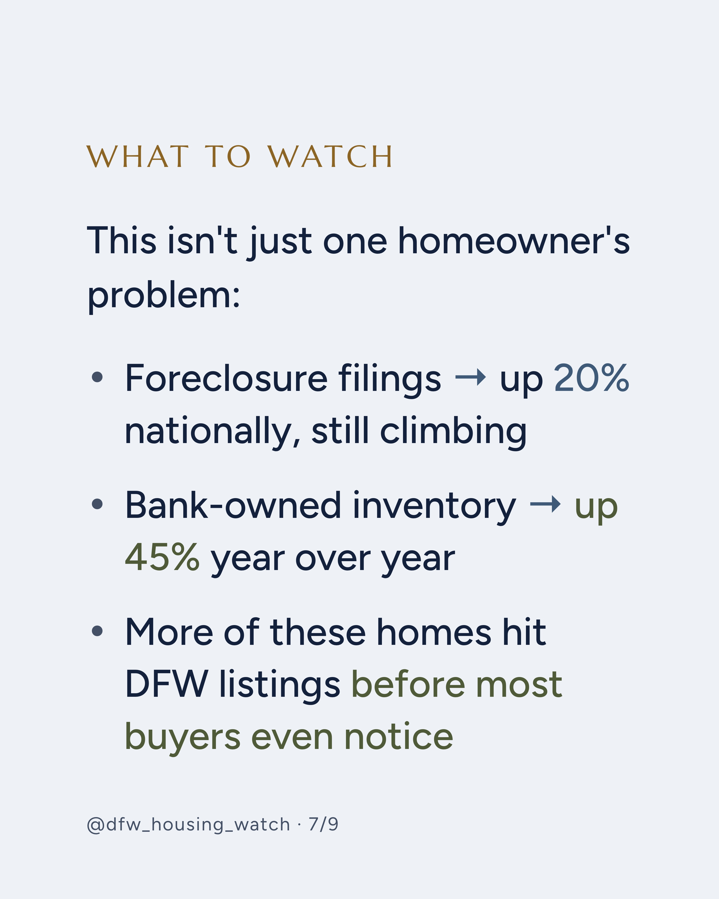
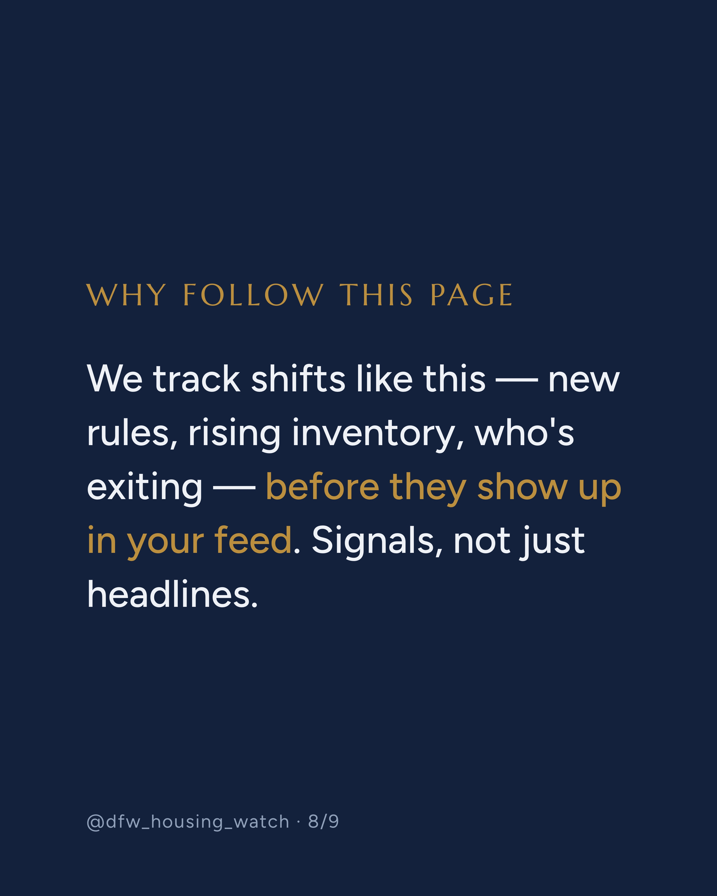
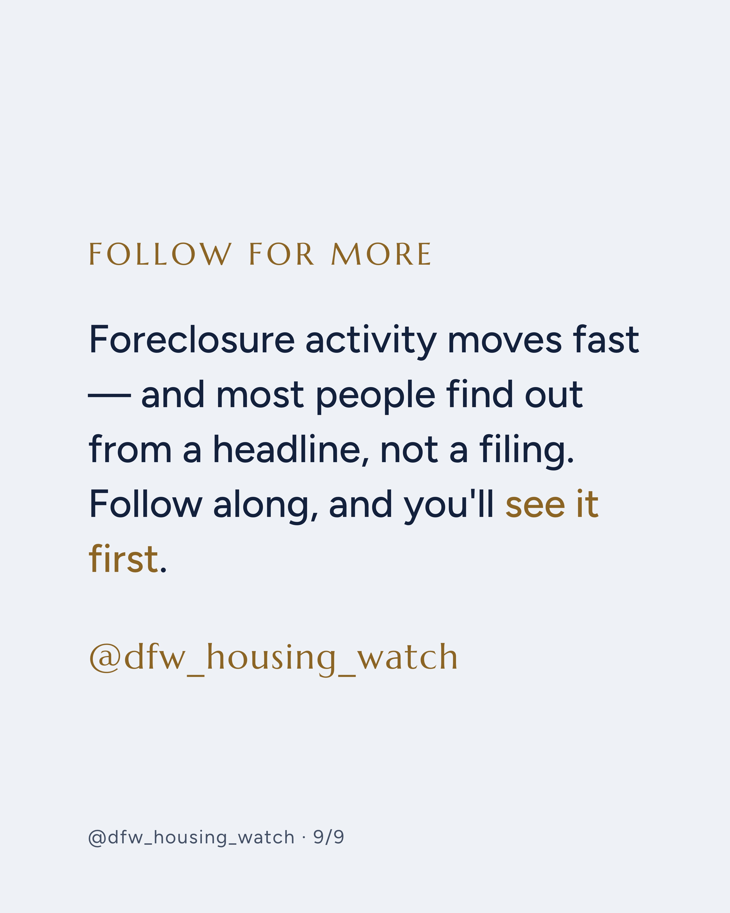

posts/dfw-foreclosure-surge/out/, or long-press → save each image straight from this page if viewing on a synced device. Caption is copy-ready at the bottom.









Everyone assumes foreclosures died with 2008. A quiet rule change just made Texas the #1 state in the country for them. 👀 📌 FHA capped loan modifications at one per 24 months starting October 2025 — rolling back over 4 years of pandemic-era relief 📌 A new 3-month trial payment period is now required (as of February 2026) before a permanent modification gets approved 📌 Texas led all 50 states with 10,617 foreclosure starts in Q1 2026 — more than any other state, including Florida 📌 Dallas alone saw 2,427 foreclosure starts that same quarter 📌 Nationally, banks repossessed 14,020 homes last quarter, up 45% year over year — inventory that's starting to show up in listings Swipe to see exactly what the new rule requires and what it means whether you're at risk or watching the market (slide 6 has the window that matters) → Follow @dfw_housing_watch — we track shifts like this before they're common knowledge. Educational only, not legal or financial advice. If you're behind on mortgage payments, contact your loan servicer or a HUD-approved housing counselor directly. #dfwrealestate #dfwhousingmarket #northtexas #dallasrealestate #texasforeclosures #movingtotexas #relocatingtodallas #texasrelocation